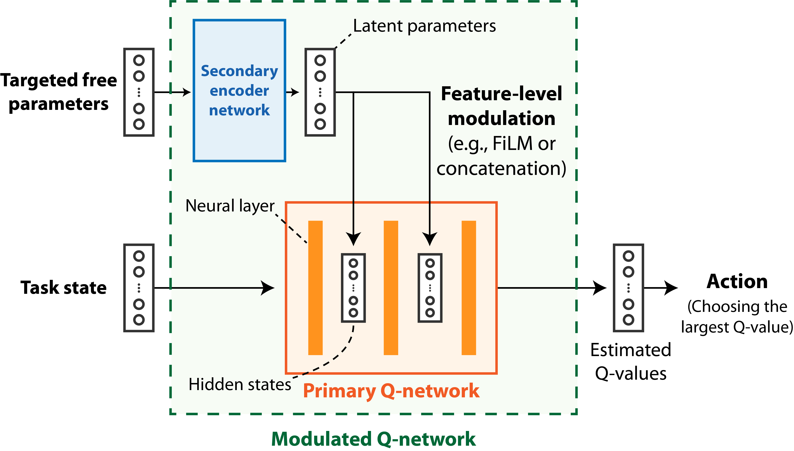
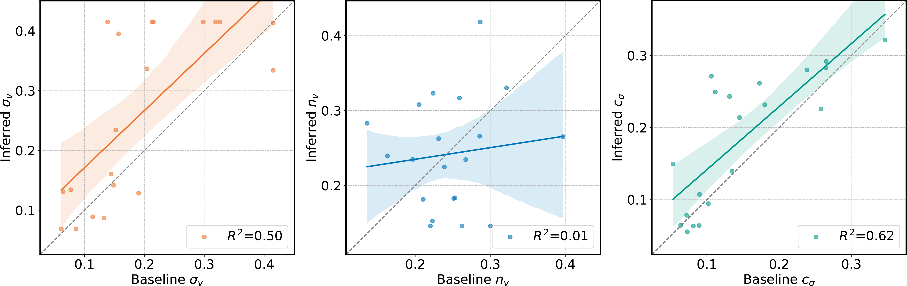

Speeding up Inference with User Simulators through
Policy Modulation
| 1Yonsei University | 2ETRI | 3NAVER AI Lab |
Abstract
The simulation of user behavior with deep reinforcement learning agents has shown some recent success. However, the inverse problem, that is, inferring the free parameters of the simulator from observed user behaviors, remains challenging to solve. This is because the optimization of the new action policy of the simulated agent, which is required whenever the model parameters change, is computationally impractical. In this study, we introduce a network modulation technique that can obtain a generalized policy that immediately adapts to the given model parameters. Further, we demonstrate that the proposed technique improves the efficiency of user simulator-based inference by eliminating the need to obtain an action policy for novel model parameters. We validated our approach using the latest user simulator for point-and-click behavior. Consequently, we succeeded in inferring the user’s cognitive parameters and intrinsic reward settings with less than 1/1000 computational power to those of existing methods.Policy modulation
| We introduce a method to generalize the optimal policy of the simulation model to the variations in the free parameters, that is, enabling policy modulation. Especially, we present a modulated Q-network, which enables feature-level modulation based on the given targeted free parameters. The primary Q-network can change the mapping to Q-values through feature-level modulation according to the latent parameters. The secondary network learns to extract the information from the free parameters required for the effective modulation of the primary Q-network. |  |
Generalized point-and-click simulator
With this policy modulation technique, the inference process no longer requires the policy re-optimization to simulate different user behaviors.
After training a point-and-click simulation model with policy modulation technique, we were able to investigate how the simulated behavior changes according to the variations in the user’s reward formulation or cognitive capabilities, by only using a single model.
|
Simulation with high weight on successful click
|
Simulation with high weight on completion time

|
|
Simulation with high vision noise
|
Simulation with low vision noise
|
Inferring cognitive capabilities from observed behavior
|  |
| With the trained user simulator, we inferred the cognitive capabitilites of 20 participants, by only based on their observed point-and-click behavior. Among the three cognitive capabilities, we succeeded in inferring the baseline values of vision noise (σ_v) and internal clock precision (c_σ). Our method significantly reduce the computational cost of the inference with user simulators. An inference process that would have taken thousands of hours, can be done in a few hours with our method. |